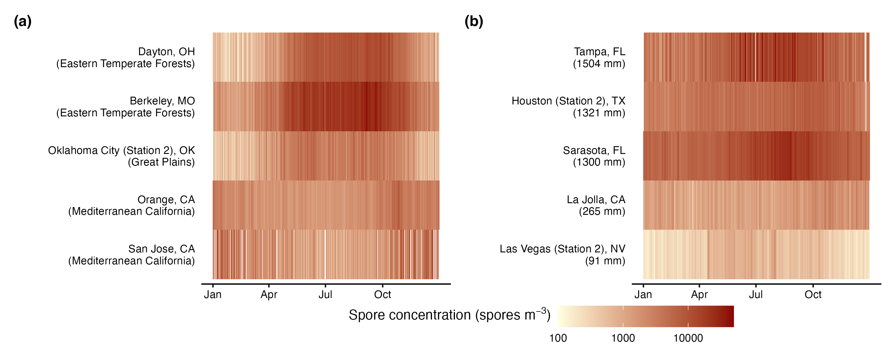

Characterizing fungal spore seasons

Fungal spore calendar for ten sampling stations.

Phenological shifts due to climate change have been extensively studied in plants and animals, yet the responses of fungal spores—crucial organisms that play important roles in ecosystems and act as airborne allergens—remain understudied. This knowledge gap in global change biology hinders our understanding of its ecological and public health implications. To bridge this gap, we first acquired a long-term (2003 — 2022), and large-scale (the continental US) dataset of airborne fungal spores collected by the US National Allergy Bureau. We then extracted ten metrics describing the phenology (e.g., start and end of season) and intensity (e.g., peak concentration and integral) of fungal spore seasons using both ecological and public health approaches, defined as percentiles of total spore concentration and allergenic thresholds of spore concentration, respectively. Using linear mixed effects models, we quantified annual temporal shifts in these metrics across the continental US. We revealed that the onset of the spore season has significantly advanced from both ecological (11 days, 95% confidence interval: 0.4 — 23 days) and public health (22 days, 6 — 38 days) perspectives over two decades. Nevertheless, the total spore concentration in an annual cycle and in a spore allergy season tended to decrease over time. The earlier start of the spore season was significantly correlated with climatic variables, such as warmer temperatures and altered precipitations. Overall, our findings suggest possible climate-driven advanced fungal spore seasons, highlighting the importance of climate change mitigation and adaptation in public health decision-making.